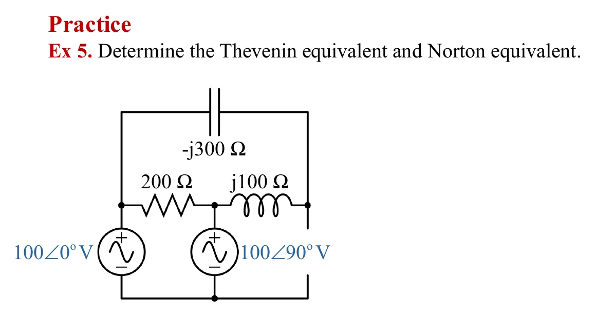
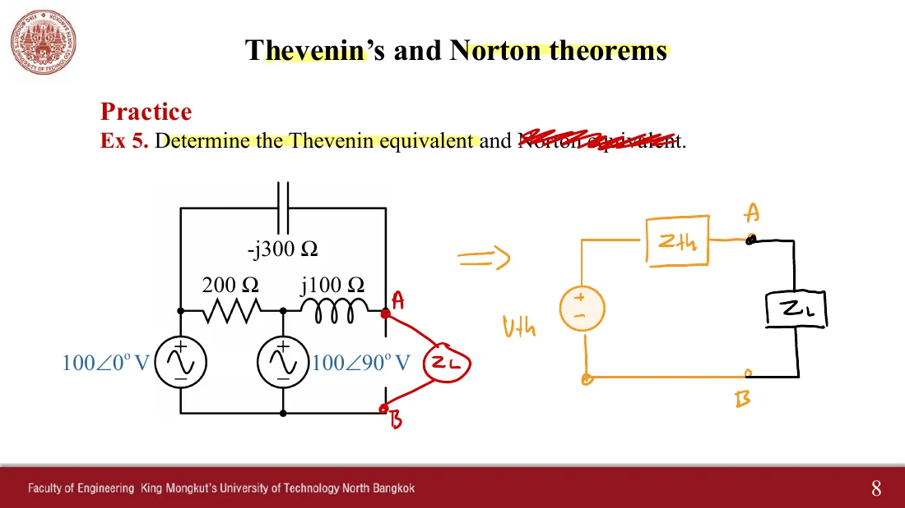
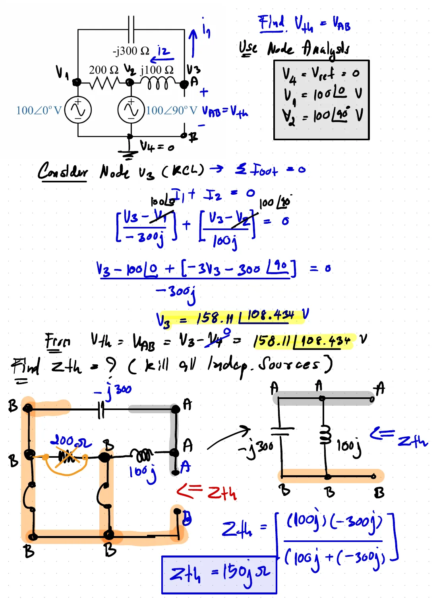
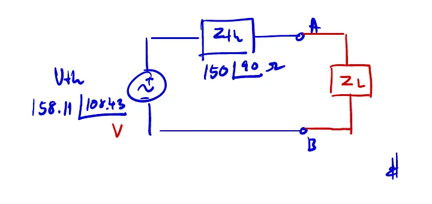
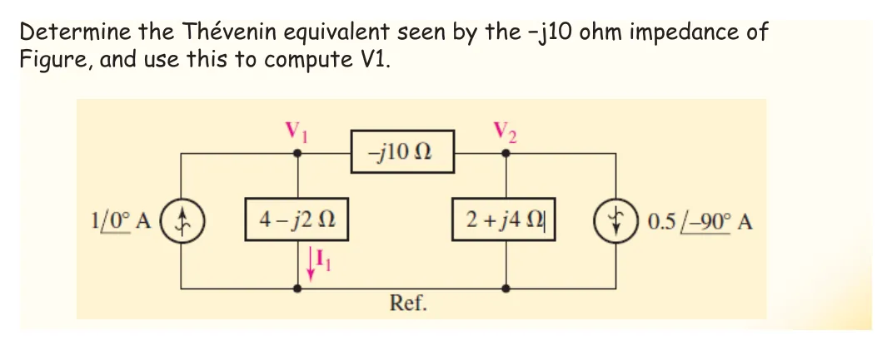

The Thévenin equivalent of chapter 5 works for AC circuits step for step: just replace resistances by impedances and voltages and currents by phasors. The result is a phasor source \(\mathbf{V}_{th}\) in series with an impedance \(Z_{th}\), which may have an imaginary part (inductive or capacitive). Ex 5 on slide p. 8 has two voltage sources; the interesting results are that \(Z_{th} = j150\ \Omega\) is a pure inductance and that the 200 Ω resistor drops out of \(Z_{th}\) altogether. This page has Ex 5 (both Thévenin and Norton), a simulation with any load (section A), and an extra problem from the 2018 slides that asks for the equivalent "seen by" an impedance sitting between two nodes.
The steps of chapter 5: remove the load → find the open-circuit voltage \(\mathbf{V}_{oc}\) → kill the sources → find \(Z_{th}\) looking into AB → connect the equivalent to the load.
\(\mathbf{V}_{th} = 158.11\angle 108.43^\circ\) V comes from a single node equation, because the two voltage sources already fix the other node voltages.
\(Z_{th} = (-j300) \parallel (j100) = j150\ \Omega\) is purely imaginary, and the 200 Ω resistor is not in \(Z_{th}\): with the sources shorted, both of its ends tie to B.
Norton: \(\mathbf{I}_N = \mathbf{V}_{th}/Z_{th} = 1.054\angle 18.43^\circ\) A, equal to the short-circuit current at AB, and \(Z_N = Z_{th}\).
The equivalent draws the same load current as the real circuit for every \(Z_L\), but only at this frequency, because \(Z_{th}\) depends on ω.
1
Ex 5: หาวงจรสมมูลเทวินินและนอร์ตันที่ขั้ว A–B
Ex 5: find the Thévenin and Norton equivalents at A–B
Slide p. 8 · Hayt §10.7 · class solution pp. 13–14 · choose the load under the picture

สไลด์หน้า 8 · แตะรูปเพื่อขยายSlide p. 8 · tap to enlarge
ภาพจำลองเปลี่ยนตามขั้นในห้อง: ถอดโหลด วัดแรงดันวงจรเปิดด้วยโวลต์มิเตอร์ ลัดวงจรแหล่งจ่ายแรงดันทั้งสอง (วงกลมประ) แล้วต่อแหล่งจ่ายทดสอบ 1∠0° V ที่ AB เพื่อวัด \(Z_{th}\) สองขั้นสุดท้ายวางวงจรจริงคู่กับวงจรสมมูล: จุดในโหลดของทั้งสองภาพวิ่งเหมือนกัน
The simulation follows the class steps: remove the load, read the open-circuit voltage with a voltmeter, short both voltage sources (the dashed circles), and drive AB with a 1∠0° V test source to measure \(Z_{th}\). The last two steps put the real circuit next to the equivalent: the dots in the load move identically in both pictures.
The 2026 in-class notes (p. 13) write the middle line as \([-3V_3 - 300\angle 90^\circ]\); the correct sign is \(+300\angle 90^\circ\) (since \(-3(V_3 - V_2) = -3V_3 + 3V_2\)). The final answer 158.11∠108.434° V is right, and the 2018 version has the correct sign. · The Norton part was struck out in class; step 5 of this page completes it.
ดูสไลด์หน้า 8 และเฉลยที่ผู้สอนเขียนในห้องSee slide p. 8 and the solution written in class

เป้าหมาย: แหล่งจ่าย \(V_{th}\) อนุกรม \(Z_{th}\) ต่อโหลด \(Z_L\) ที่ A–B (ส่วนนอร์ตันถูกขีดฆ่า)The target: a source \(V_{th}\) in series with \(Z_{th}\) driving \(Z_L\) at A–B (the Norton part struck out)

\(V_{th} = 158.11\angle 108.434^\circ\) V จากสมการโนดเดียว และ \(Z_{th} = j150\ \Omega\) เมื่อฆ่าแหล่งจ่าย\(V_{th} = 158.11\angle 108.434^\circ\) V from one node equation, and \(Z_{th} = j150\ \Omega\) with the sources killed

วงจรสมมูลที่ได้ในห้องThe equivalent obtained in class
A
โหลดเชิงซ้อนแบบใดก็ได้: กระแสในโหลดเท่ากันเสมอ
Any complex load: always the same load current
วงจรของ Ex 5 · ชี้เมาส์ที่แหล่งจ่ายเพื่อเทียบกระแสภายใน
The circuit of Ex 5 · hover over the sources to compare the internal currents
Slide \(R_L\) and \(X_L\) of the load \(Z_L = R_L + jX_L\). The real circuit, the Thévenin equivalent and the Norton equivalent drive the same load: the load current is equal for every value, while the currents inside the circuits are not. Press "10 − j150 Ω": the load's imaginary part cancels \(Z_{th} = j150\ \Omega\) exactly, the total impedance is only 10 Ω, and the current gets very large.
Find the Thévenin equivalent seen by the −j10 Ω impedance, and use it to find \(\mathbf{V}_1\)
สไลด์ปี 2561 หน้า 10 · Hayt Example 10.11 · ไม่มีเฉลยในสไลด์
2018 slides, p. 10 · Hayt Example 10.11 · no solution on the slides

สไลด์ปี 2561 หน้า 10 · แตะรูปเพื่อขยาย2018 slides, p. 10 · tap to enlarge
"มองจาก −j10 Ω" แปลว่าให้ −j10 Ω เป็นโหลด ขั้ว A คือโนด \(V_1\) และขั้ว B คือโนด \(V_2\) ซึ่งไม่มีขั้วใดเป็นโนดอ้างอิง ฆ่าแหล่งจ่ายกระแสด้วยการเปิดวงจร (วงกลมประ) ไม่ใช่ลัดวงจร
"Seen by the −j10 Ω" means the −j10 Ω is the load: terminal A is node \(V_1\) and terminal B is node \(V_2\), and neither is the reference node. Current sources are killed by opening them (the dashed circles), not by shorting.
B
ฝึกเพิ่ม
More practice
ตอบทศนิยมอย่างน้อย 3 ตำแหน่ง มุมเป็นองศา
Give at least 3 decimal places, angles in degrees
ลองทำดู 1 — ทำไม 200 Ω หายไป
ขั้นที่ 3 ของ Ex 5: ลัดวงจร 100∠0° V และ 100∠90° V แล้วปลายทั้งสองของ 200 Ω ต่อกับเส้นล่าง (B) ทั้งคู่ จึงไม่มีกระแสไหลผ่าน